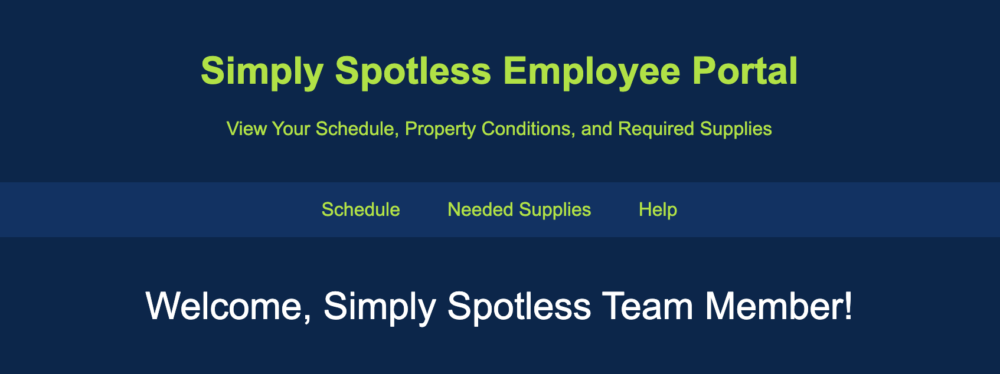

Online Help Manual
The Simply Spotless Employee Portal allows employees to view their daily cleaning schedule, assess the condition of properties, and check what supplies are required for each job.
To view your assigned schedule:
To check what you need to bring:
Ensure you're connected to the internet. If the issue persists, contact your supervisor or IT support.
Contact the supply manager or check if a colleague can lend you what you need.
Send a message through the internal communication tool or notify your team lead directly.